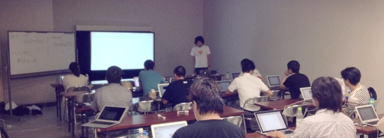

東京のこけむさズから始まり、西日本では広島・大阪と開催されたSketch勉強会の第4回目を「大都会岡山」で開催しました。
今回はこもりまさあきさんをお迎えして、とにかくSketchを触ってみようという勉強会でした。Sketchの概要から基本的な使い方に始まり、途中ショートカットに関するライトニングトークを挟みつつ、ハンズオンではプラグインを利用したカンプの作成を行いました。
私自身、ずいぶんとSketchを推してますが、以前も書いた通り作り上げるツールは正直なんでもいいと思っています。しかし、何で推しているかといえば、（Sketchに限らず）使ってみないと良さが分からず、実はいろいろと損をしてるんじゃないの？ということを伝えたいわけです（もちろん私の影響力があまりないことは理解してます）。
使いこなすというレベルまでは当然コストもかかりますが、最近のアプリはコンパクトに作られているため、そのコストは以前よりは少なくなっています。また、使いこなすレベルに到達しなくとも、使いやすいところだけチョイスして、今までのアプリと組み合わせるという使い方もあります。
Adobeもウェブ関連に力を入れてるのはわかります（もうPhotoshopはPhotoshopじゃない）し、昔からのTipsや資産もあり特に印刷関連はAdobeから逃れられません。しかしウェブに関してはSketchをはじめとした、小回りがきくアプリを活かせる場面は往々にあるのではないでしょうか？
初めて使う方やうまく使いこなせてなかった方は、この勉強会がそのキッカケになるように、すでに使ってる方には1つでも新しい気付きを持ち帰っていただけたなら、私としては本望であります。
西日本では岡山に近い大阪と広島で開催されておりまして、正直なところ集客に関しては不安要素が多めでした。ただ、ふたを開けてみれば15人の方がご参加くださいまして、広めの会場も何とか様になるぐらいの感じに。
いわゆる「いつものメンバー」が多かったこともあり、ちょっと内輪感がでてしまったので、初めてお越しいただいた方はちょっと居心地が悪かったかと思います。そこは反省点として次回より活かしていきます。
ということで、酷暑の中ご参加くださった皆さま、そして今回のオファーに快諾くださった講師のこもりさん、本当にありがとうございました！
参加レポートありがとうございます！
当日の流れはこちらを
- 全ツイート版（toggeter）：Sketch勉強会 in 大都会岡山 – Togetterまとめ
- ピックアップ版（Storify）：Sketch勉強会 in 大都会岡山 (with tweet) · littlebusters · Storify
スライド